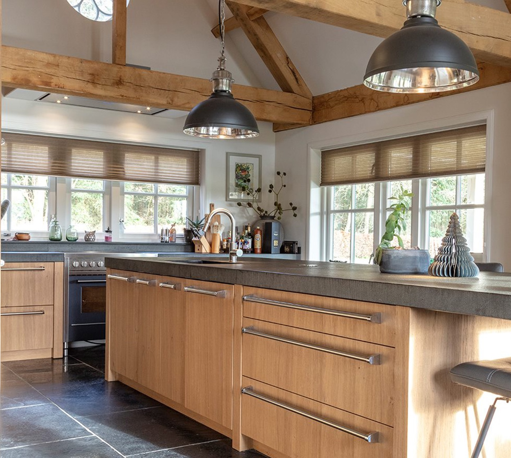
Landelijk
Een klassieke, warme uitstraling. Een echte sfeerkeuken, waarmee u warmte en comfort in huis haalt.
Keuken & bad op maat in Zwolle
Een keuken die helemaal bij u past, samen ontworpen in ons monumentale pand aan de Thorbeckegracht. Kom vrijblijvend kijken.
4,9 uit 57 Google-reviews
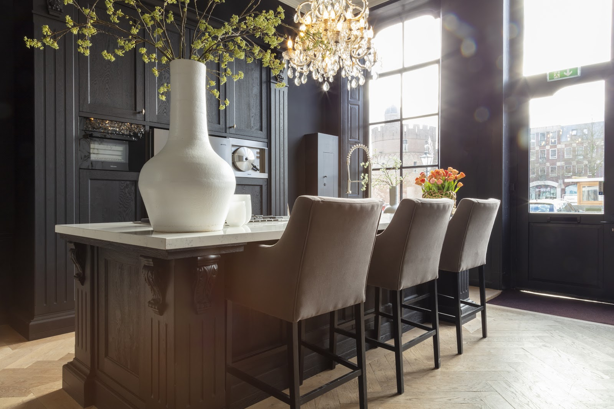
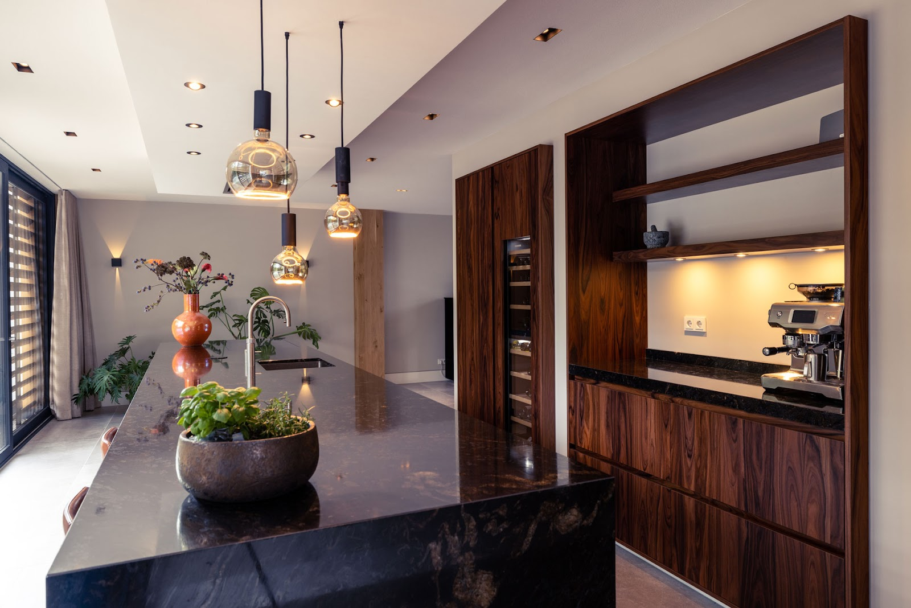
Het is de plek waar de familie samenkomt, dus die moet naadloos passen bij uw smaak en uw interieur. Daarom gaan wij voor maatwerk, duurzaamheid en betaalbare kwaliteit.
Een onbetaalbare uitstraling, tegen een betaalbare prijs.
Zes stijlen om mee te beginnen. Daarna maken we elke keuken op maat van uw woning.

Een klassieke, warme uitstraling. Een echte sfeerkeuken, waarmee u warmte en comfort in huis haalt.
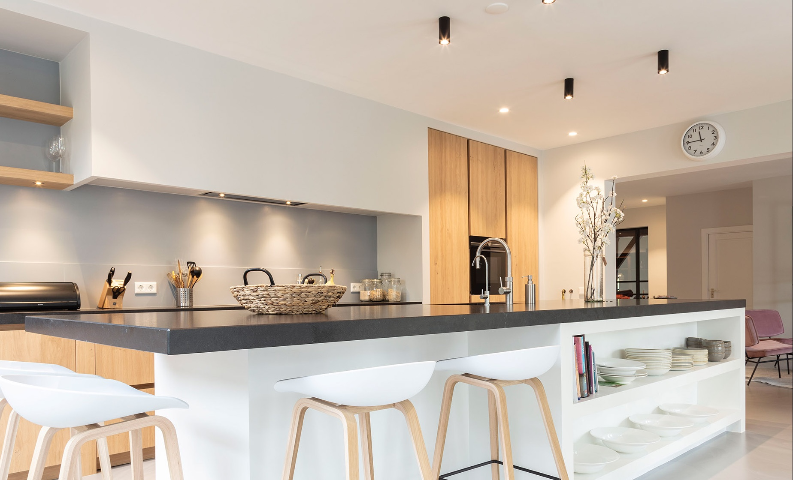
Strakke vormgeving, gladde contouren en een schone uitstraling. Eigentijds en prettig in gebruik.
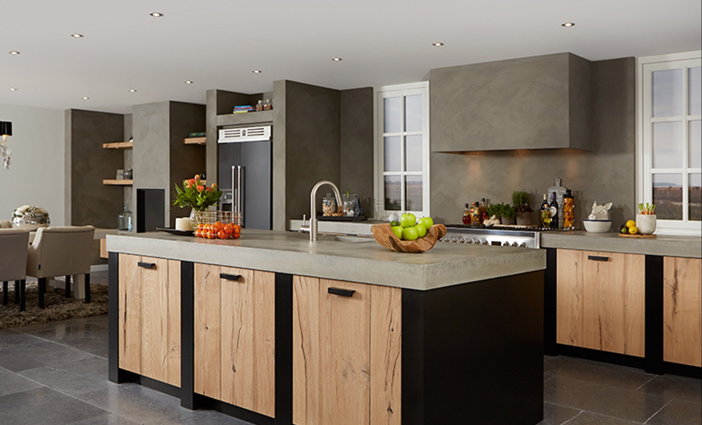
Het gevoel van vroeger, met het gemak van nu. De ideale mix tussen nostalgie en hedendaagse eisen.
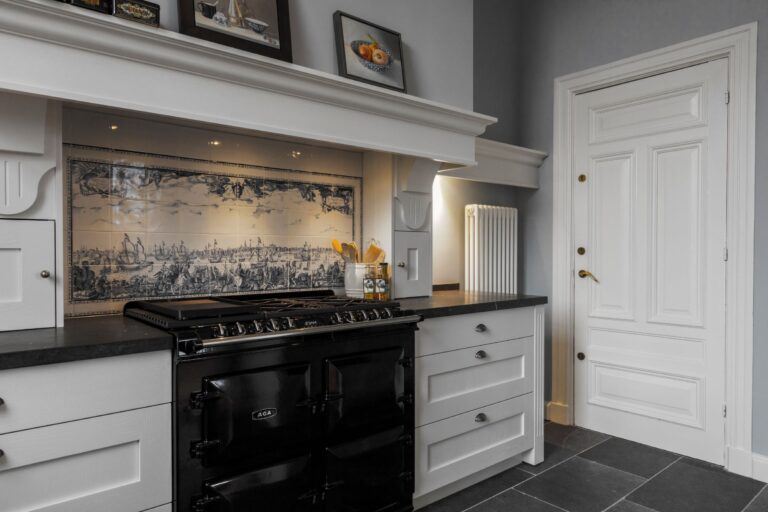
Een warm gevoel van vroeger met het comfort van een topkeuken. Nostalgische sfeer, zonder in te leveren op gebruiksgemak.
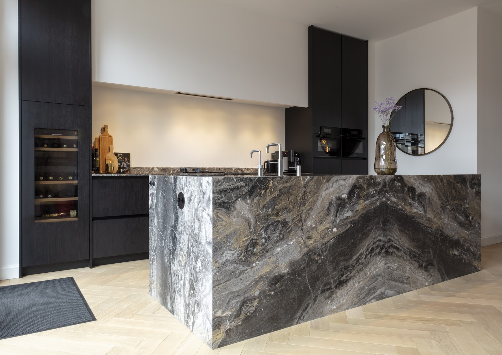
Strakke lijnen in hoogwaardige materialen, zoals roestvrijstaal, metaal, steen, chroom of glas. Een exclusieve uitstraling, op maat gemaakt.
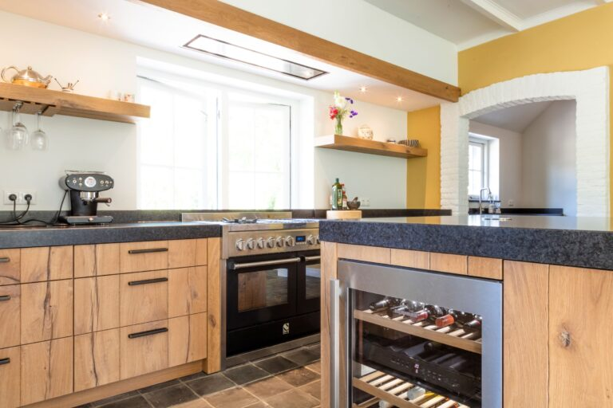
Tijdloos, warm en gezellig. Ambachtelijk gemaakt op maat: de schoonheid van puur hout, waar u uw hele leven plezier aan beleeft.
Toch iets anders in gedachten? We maken ook greeploze en rechte keukens, keukens met kookeiland of gebinten, in zwart, wit, grijs, RVS, eco, Italiaans en handgeschilderd.
“In 2012 hebben wij een keuken gekocht bij Van Galen. We zochten naar een witte hoogglans keuken en kochten daar een zwarte keuken met een matte houtstructuur😄 We zijn nu bijna 15 jaar later nog altijd zo blij met onze prachtige keuken, het goede advies, kwaliteit en service.”
“Wij zijn erg prettig geholpen door Rik en Casper. Er werd goed meegedacht en er werd eerlijk gecommuniceerd. Geen agressieve verkoop praktijken. De keuken is van hoogwaardige kwaliteit, nette afwerking en snelle montage door de monteur. Tot op de dag van vandaag zijn we verliefd op onze van Galen keuken!”
“We zijn ontzettend goed geholpen door Robert en zijn team bij Van Galen Keukens. Na meerdere bezoeken aan andere showrooms was ons bezoek bij van Galen een enorme verademing.”
“Een hele fijn team met mensen die ons fantastisch hebben geholpen met het uitkiezen van zowel mijn eigen keuken als die van mijn ouders. Ook mijn wispelturigheid (qua werkblad) werd geaccepteerd 😉 en geduldig toegelaten.”
Veel tijd, aandacht en energie gaat bij ons naar advies, ontwerp en realisatie. Daarom werken we het liefst op afspraak.
U komt langs in de showroom en we bespreken wat er mogelijk is, ook als u nog twijfelt over materialen of kleuren.
Samen ontwerpen we uw eigen droomkeuken, exclusief op maat van uw woning. Bij het ontwerp is echt niets te gek.
Apparatuur werken we strak weg in het ontwerp, zoals een Bora-afzuigsysteem in uw aanrechtblad. En we zijn pas tevreden wanneer u dat ook bent.
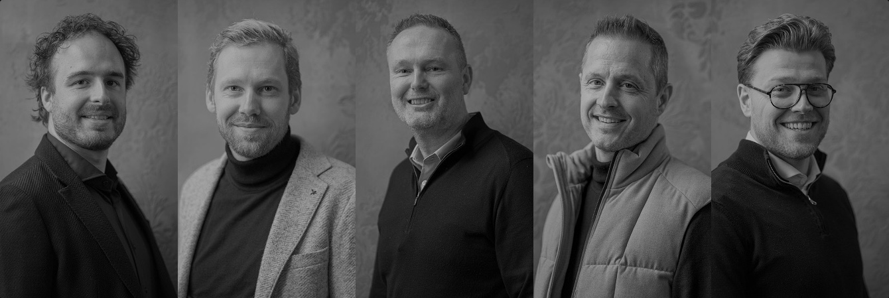
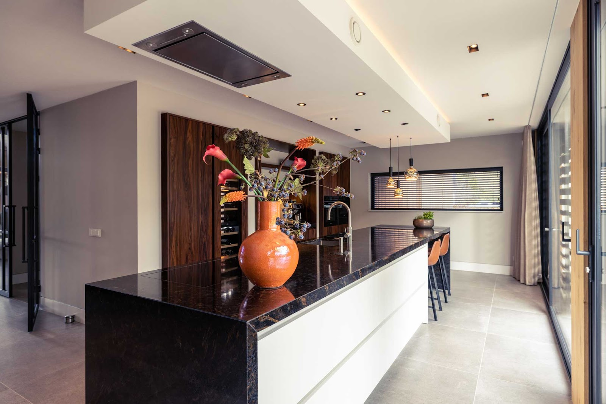
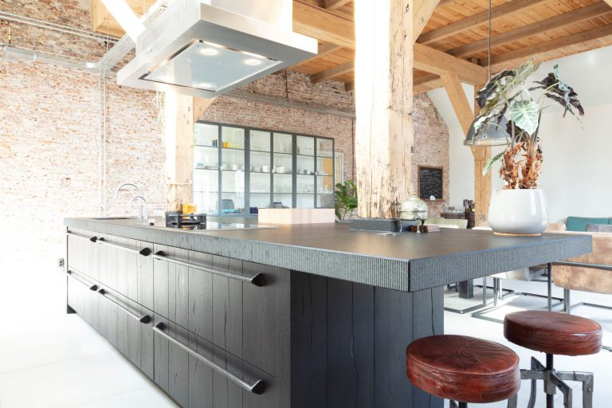
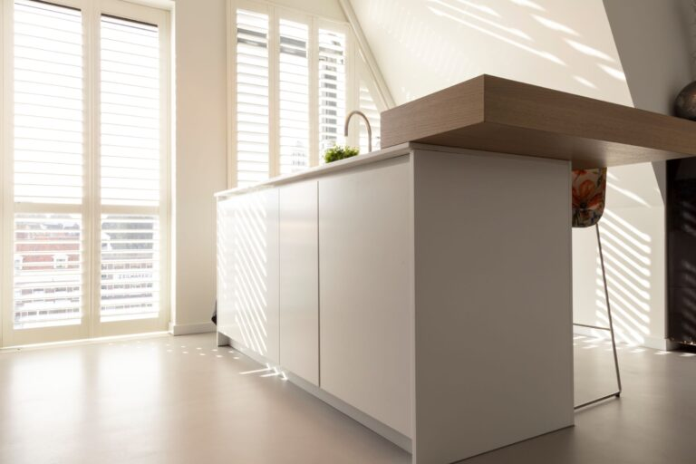
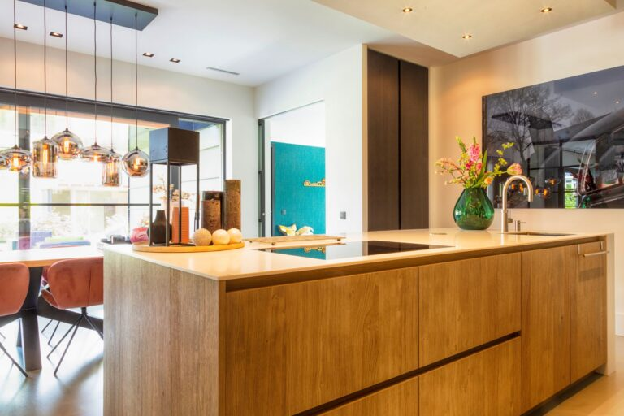
Onze keukens en badkamers staan onder meer in
Zwolle, Hattem, Kampen, Dalfsen, Genemuiden, Staphorst, Ens, ’t Harde, Ermelo, Eerbeek, Oldenzaal, Barsingerhorn, Almere, Amersfoort, Huizen, Hilversum, Nigtevecht, Amsterdam, Den Haag en op Curaçao.
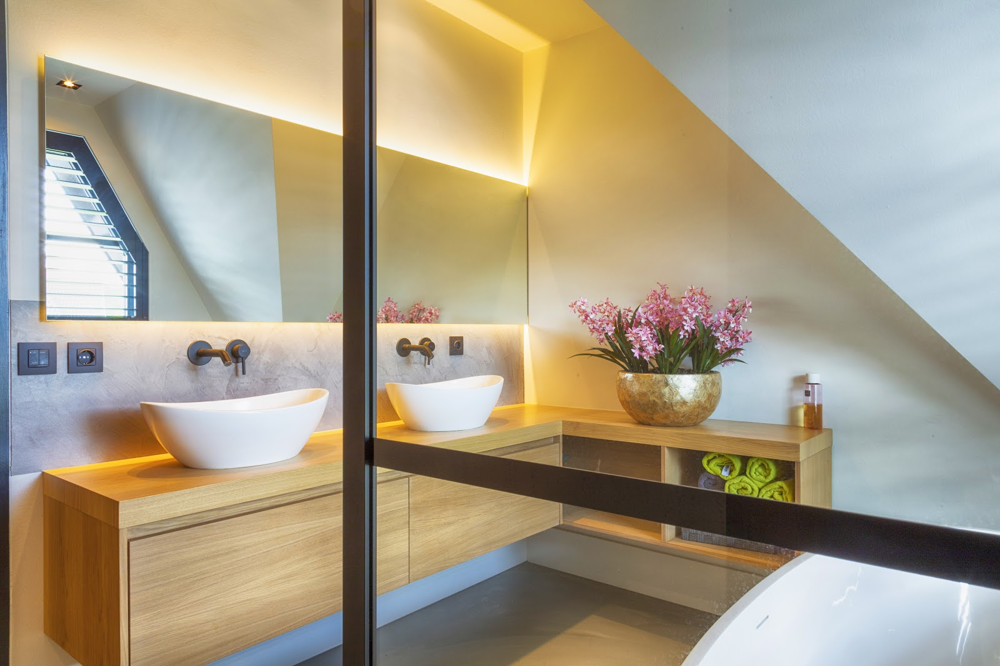
Samen met Ron Stappenbelt verzorgen we badkamers en complete interieurs. Van de keuken tot de badkamer één geheel. In onze showroom ziet u ook een mooi assortiment badmeubels.
Voor het beste advies werken we bij voorkeur op afspraak. Op onze openingstijden kunt u ook geheel vrijblijvend een kijkje nemen in de showroom.
Bel 038 457 8524| Maandag | Gesloten |
| Dinsdag | 10:00 - 17:00 |
| Woensdag | 10:00 - 17:00 |
| Donderdag | 10:00 - 20:00 |
| Vrijdag | 10:00 - 17:00 |
| Zaterdag | 10:00 - 16:00 |
| Zondag | Gesloten |